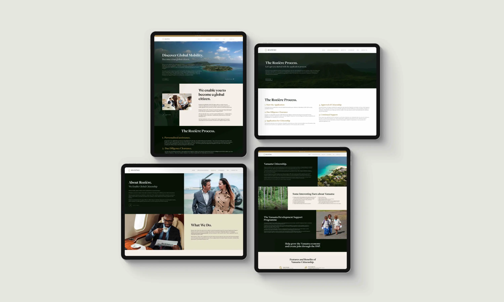
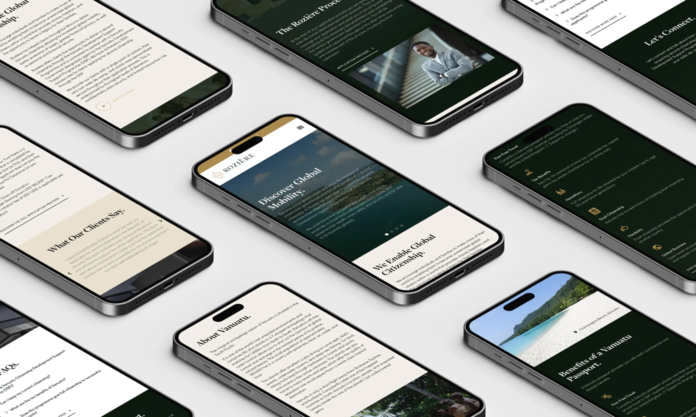

Rozière Global
UI-UX Design & Animation 2D
Découvrez la mobilité mondiale
Rozière Global est une agence d'immigration sud-africaine spécialisée dans l’offre de “citoyenneté par investissement”. Grâce à son programme de soutien au développement de la citoyenneté du Vanuatu, elle offre à ses clients la possibilité d'obtenir une deuxième citoyenneté et d'accroître leur mobilité mondiale, une meilleure protection de leurs actifs, une plus grande confidentialité, ainsi qu'une sécurité personnelle et financière.
Jean-François Pilâtre de Rozier
En partenariat avec l'agence sud-africaine PURE Creative, j'ai eu la chance de concevoir plusieurs pistes graphiques pour l’identité visuelle et de faire tout l’UI-UX du site internet. Le nom est un hommage à l'inventeur de la première montgolfière et le logo s'inspire du visage d'un lion, symbole de force et de courage. L'utilisation du vert et de l'or reflète l'exclusivité, ainsi qu’un sentiment de prospérité.
Année
Octobre 2021
Read in English üá¨üáß